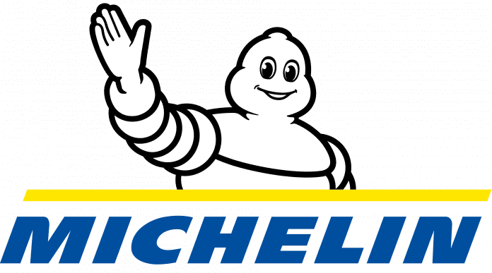

Excellence opérationnelle
Amélioration continue et conduite du changement, du cadrage au reporting.
Ingénieur Arts et Métiers · Promotion 2026
Je travaille sur des sujets d'amélioration continue, de pilotage de la performance et d'aide à la décision en environnement industriel.
Ingénieur Arts et Métiers spécialisé en gestion industrielle et chaîne logistique. Je m'oriente vers l'amélioration continue, l'excellence opérationnelle et l'aide à la décision en environnement industriel.
Chez Cartier, au sein de la direction Supply Chain, j'ai travaillé sur des sujets d'optimisation, de pilotage de la performance et de structuration d'outils métier.
En dehors du travail, je pilote des drones FPV. C'est une pratique exigeante, autant au pilotage que sur la partie technique : montage, réglages et réparation.
Amélioration continue et conduite du changement, du cadrage au reporting.
Planification, approvisionnements et gestion des stocks.
Reporting, KPI et outils d'aide à la décision.
Outils métier industriels et simulation de flux.
Utilisateur avancé de l'IA générative pour des usages métier. Expérience pro vécue en anglais.
Cartier Joaillerie International, Direction Supply Chain · Paris
Festival Le Grand Bastringue de Cluny

Michelin
Serveur en environnement 100 % anglophone et sous forte pression.
Première expérience en environnement industriel et chaîne de production.
Gestion de stock, préparation et suivi de commandes de produits sensibles.
Diplôme d'ingénieur
Spécialisation : gestion industrielle et chaîne logistique.
Classes préparatoires PTSI → PT
Sciences industrielles de l'ingénieur, mathématiques et physique.
Je pilote des drones FPV (First Person View) : on vole en immersion, casque vidéo sur les yeux, en voyant en direct ce que filme le drone. C'est aussi une activité très technique : je monte, règle, soude et répare mes appareils moi-même.
Une opportunité de stage, un projet Supply Chain ou simplement envie d'échanger ? Je réponds rapidement.
// Disponible pour un stage de 6 mois en Suisse à partir de septembre 2026.